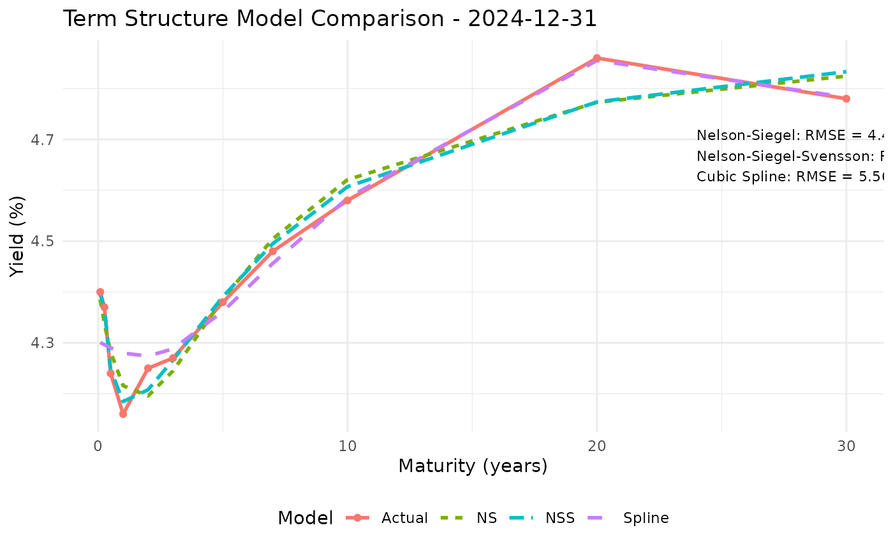

Compare Nelson-Siegel Model to Other Term Structure Models
Source:R/dns-visualization.r
compare_term_structure_models.RdCompares the Nelson-Siegel model fit against other term structure models.
Arguments
- yield_data
Data frame. Historical yield curve data with 'Date' column.
- date_to_compare
Date. The specific date to compare models.
- models
Character vector. Models to compare, from "NS", "NSS", "Svensson", "Spline", "SmithWilson". "NSS" and "Svensson" name the same four-factor Nelson-Siegel-Svensson curve, which needs at least 5 observed maturities. "SmithWilson" needs the SmithWilsonYieldCurve package and is an interpolation rather than a fit; see Details.
- spline_df
Integer. Degrees of freedom for spline model.
- units
Character. Units for the returned fit metrics:
"bp"(the default, basis points) or"decimal"(the units of the input yields).- ufr
Numeric. Ultimate forward rate for the Smith-Wilson curve, which its extrapolation converges to beyond the last observed maturity. Defaults to the longest observed yield.
- alpha
Numeric. Smith-Wilson convergence speed toward
ufr.- initial_lambda, method
Passed to
fit_ns_modelfor the "NS" row, which is the only row whose fit depends on a numerical search. Before 0.6.0 this table reported 8.87 bp for Nelson-Siegel on the bundled panel against the cubic spline's 5.56, a difference attributable to the lambda default and the optimiser's stopping rule rather than to the models. It now reports 4.43. Passinginitial_lambda = 0.0609, method = "optim"restores the earlier configuration and reports 8.57, which differs from 8.87 because the objective is now scaled and the search stops at a different point.
Value
A list containing:
plot: A ggplot object with model comparisons
metrics: A data frame with RMSE, MAE and MaxError for each model, in
units
Details
Decimal yields scale to basis points by 10,000, matching
fit_dns_model and plot_factor_time_series.
Maturities with no observed yield on date_to_compare are excluded
from every model's fit and from the metrics.
Smith-Wilson is an interpolation, not a parsimonious fit. It
carries one kernel term per input instrument, so it reproduces every
observed yield essentially exactly – on the bundled panel, to within
4e-12 basis points. Its error metrics are therefore approximately zero by
construction and are not comparable with those of the three- and
four-factor curves, which are fitting 3 or 4 parameters to 11
observations. It is offered because its extrapolation beyond the last
maturity, which converges to ufr, is the part that is actually
useful, and because the comparison plot shows that behaviour clearly.
The Svensson curve adds a second curvature term with its own decay, $$y(m) = \beta_1 + \beta_2 L_2(\lambda_1, m) + \beta_3 L_3(\lambda_1, m) + \beta_4 L_3(\lambda_2, m),$$ and is fitted by the same concentrated least squares the Nelson-Siegel fitter offers: the four betas are solved exactly at each pair of decays and only the two decays are searched. Both decays are estimated rather than fixed, and they are kept apart, since they coincide the third and fourth loadings become identical and the betas are no longer identified.
Examples
data(treasury_yields)
# Errors are in basis points. The Svensson curve nests Nelson-Siegel, so it
# fits at least as well.
comparison <- compare_term_structure_models(treasury_yields,
models = c("NS", "NSS", "Spline"))
comparison$metrics
#> Model RMSE MAE MaxError
#> 1 Nelson-Siegel 4.431432 3.887569 8.700489
#> 2 Nelson-Siegel-Svensson 3.542643 2.502529 8.621915
#> 3 Cubic Spline 5.561295 3.995767 11.985578
comparison$plot

if (FALSE) { # \dontrun{
# Smith-Wilson interpolates exactly, so its error is ~0 by construction
compare_term_structure_models(treasury_yields,
models = c("NS", "SmithWilson"))$metrics
} # }